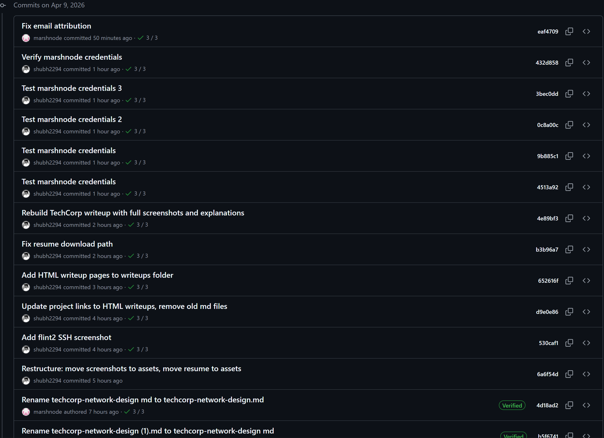
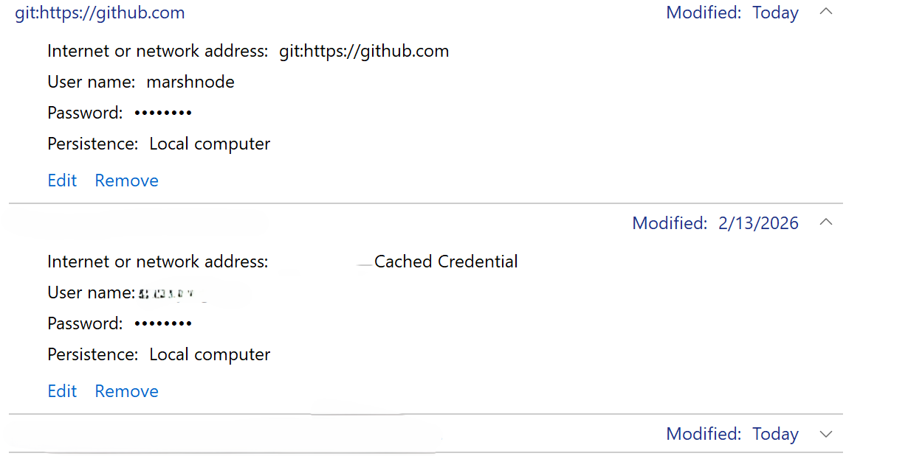
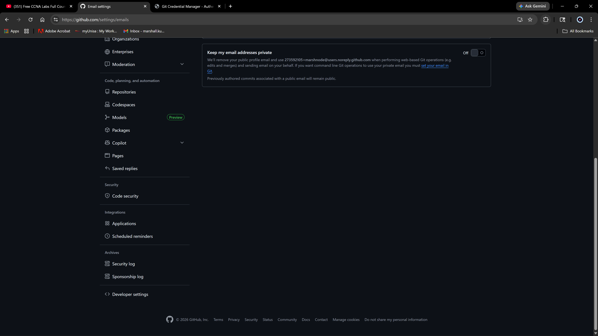
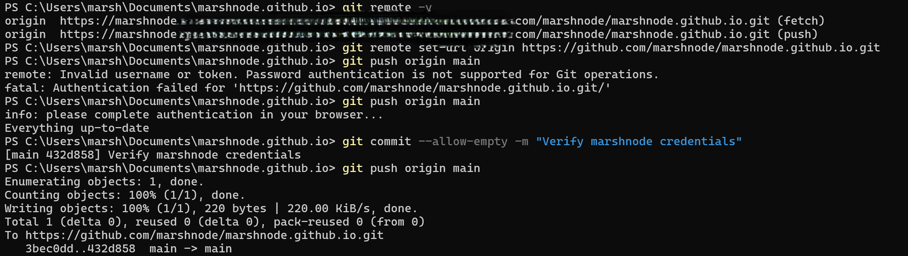
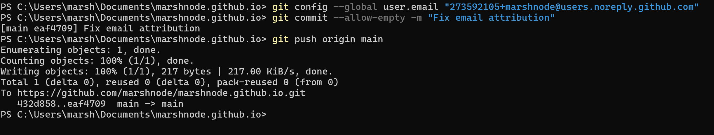
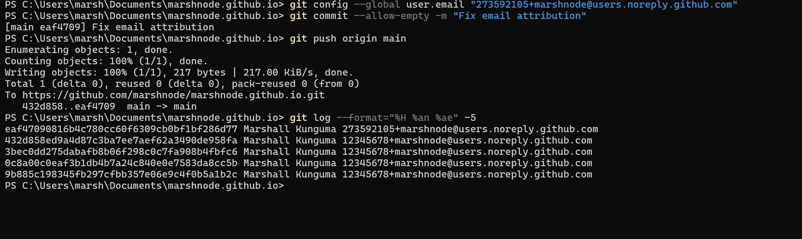
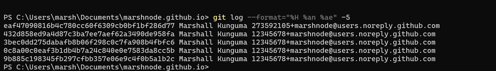

// incident summary
Incident Summary
| Field | Detail |
|---|---|
| Date | April 9, 2026 |
| Environment | Windows 11, PowerShell, Git 2.53.0 |
| Repository | marshnode/marshnode.github.io (GitHub Pages) |
| Anomaly Detected | Commits attributed to unrecognized account: shubh2294 |
| Root Cause | Incorrect Git user email set to placeholder value, not matching real GitHub user ID |
| Secondary Finding | PAT embedded in remote URL during diagnostic testing, immediately revoked |
| Status | Fully Remediated |
// phase 01
Discovery
While reviewing the repository commit history on GitHub following a series of pushes, several recent commits were observed attributed to an account identified as shubh2294, a name and account not recognized as associated with the repository owner. The commits contained legitimate content from the active development session, ruling out unauthorized code injection. However, the attribution anomaly warranted immediate investigation.
⚠ Anomaly Detected
Commits pushed from the local machine appeared under an unrecognized GitHub account in the repository's commit history. The repository owner's account (marshnode) was not being credited for work it authored and pushed.
// commit history showing unrecognized account

GitHub repository commit history showing multiple recent commits attributed to shubh2294 rather than the repository owner marshnode. The commits contain legitimate content pushed during the active development session, confirming this is an attribution issue rather than unauthorized access. Earlier commits correctly show marshnode as the author, pinpointing when the misconfiguration first took effect.
// phase 02
Investigation
Investigation began with the most likely sources of credential attribution failure: cached credentials in Windows Credential Manager, Git global identity configuration, and the authentication token being used for pushes.
Step 1: Credential Manager Inspection
Windows Credential Manager was inspected for the git:https://github.com entry. The stored username showed marshnode, which appeared correct on the surface. However, the password field contains the actual Personal Access Token used for authentication, and the token itself determines which GitHub account GitHub recognizes, not the username label.
// Windows Credential Manager entry

Windows Credential Manager showing the cached Git credential for github.com. The username field displays marshnode but the token stored in the password field was identified as belonging to a different GitHub account. GitHub authenticates pushes using the token, not the username label stored locally, meaning the username field alone is not sufficient to confirm identity.
Step 2: Git Identity Configuration Audit
The Git global configuration was audited by checking the configured user name and email. The user name was correctly set to Marshall Kunguma. However, the email was set to a placeholder value of 12345678+marshnode@users.noreply.github.com, using a generic placeholder ID of 12345678 rather than the actual GitHub user ID assigned to the marshnode account.
GitHub uses the email address in a commit to link that commit to a specific account. When the email does not match any real GitHub account, GitHub falls back to attributing the commit to whoever's token authenticated the push. Since a token associated with shubh2294 was cached in Credential Manager at the time, all commits were attributed to that account.
Step 3: Locating the Correct User ID
The correct GitHub user ID for the marshnode account was located in GitHub Settings under the Emails section, where GitHub displays the noreply address in the format USER_ID+username@users.noreply.github.com. The real user ID was confirmed as 273592105, not the placeholder value of 12345678 previously configured.
// GitHub email settings showing correct noreply address

GitHub Settings email page revealing the correct noreply address: 273592105+marshnode@users.noreply.github.com. This confirmed the root cause. The Git global config email was set to 12345678+marshnode which does not correspond to any GitHub account, causing GitHub to attribute commits to the authenticated token owner instead.
// phase 03
Root Cause Analysis
The root cause was a misconfigured Git global email using a placeholder user ID that did not match the actual GitHub account. GitHub's commit attribution system works as follows: when a push is received, GitHub checks the commit's author email against its user database. If the email matches a registered account, that account is credited. If no match is found, GitHub attributes the commit to the account that authenticated the push via token.
Placeholder User ID in Git Email Config
Git global user email was set to 12345678+marshnode@users.noreply.github.com during initial setup using a generic placeholder. The real marshnode GitHub user ID is 273592105. Because the email matched no real account, GitHub fell back to token-based attribution.
Cached Token Belonging to a Different Account
During the initial push session, a Personal Access Token belonging to the shubh2294 account was entered at the credential prompt, possibly copied from a browser session where a different GitHub account was active. This token was cached by Windows Credential Manager and used for all subsequent pushes, causing GitHub to attribute all commits to shubh2294.
Token Exposed in Remote URL During Diagnostics
During the diagnostic process, a Personal Access Token was embedded directly in the remote URL using git remote set-url. Running git remote -v subsequently printed the full URL including the token in plain text. The token was identified immediately and revoked within minutes of exposure. No unauthorized use was detected.
// secondary finding
Token Exposure and Immediate Revocation
⚡ Secondary Finding
During diagnostic testing, a Personal Access Token was embedded in the Git remote URL. The token was exposed in plain text when git remote -v was run. It was identified immediately, revoked on GitHub within minutes, and replaced with a fresh token. No unauthorized repository access was detected before revocation.
// token embedded in remote URL, immediately identified

Output of git remote -v showing the remote URL with the embedded token visible in plain text. The token string has been redacted in this screenshot. Upon seeing this output, the token was immediately revoked via GitHub Settings → Developer settings → Personal access tokens. This finding reinforced the importance of never embedding credentials directly in URLs, as any tool that prints the remote URL will expose the token.
Revocation Steps Taken
- Identified token exposure from git remote -v output
- Navigated to GitHub Settings → Developer settings → Personal access tokens
- Deleted the exposed token immediately
- Removed the token from the remote URL using git remote set-url to restore the clean URL
- Generated a fresh token with minimum required scope (repo only)
- Verified no unauthorized commits or repository changes occurred during the exposure window
// phase 04
Remediation
Once the root cause was identified, remediation was straightforward. The Git global email was updated to use the correct GitHub user ID, and a fresh token generated under the correct account was stored in Windows Credential Manager.
// git config email corrected to real user ID

The remediation command: git config --global user.email with the correct noreply address 273592105+marshnode@users.noreply.github.com. An empty commit was then pushed to verify attribution. The subsequent push confirmed the fix, with the commit correctly appearing under the marshnode account on GitHub for the first time during this session.
// successful push with correct attribution confirmed

Terminal output showing the successful push after applying the email fix. The commit eaf4709 pushed cleanly to origin main. Verification on GitHub confirmed this commit appeared correctly under the marshnode account, confirming the misconfiguration was fully resolved.
✓ Resolution Confirmed
All subsequent commits after applying the correct email configuration appeared correctly attributed to the marshnode account on GitHub. The root cause was fully resolved. Windows Credential Manager was updated with a valid marshnode token. The exposed token was revoked with no impact detected.
// git log verification showing before and after

Output of git log showing the five most recent commits with full author name and email. The most recent commit (eaf4709) correctly shows 273592105+marshnode@users.noreply.github.com, confirming the fix took effect. The four commits before it show the old placeholder email 12345678+marshnode, clearly marking the boundary between the misconfigured state and the resolved state. This single output captures the entire incident in one view.
// incident timeline
Timeline
Anomaly Detected
Commit history review revealed shubh2294 account attributed to recent pushes from the local machine.
Investigation Begins
Windows Credential Manager inspected. Cached username showed marshnode but token origin unconfirmed.
Git Config Audited
Git global user email identified as using placeholder ID 12345678 instead of real GitHub user ID.
Token Exposure Detected
During diagnostic testing, PAT embedded in remote URL was exposed via git remote -v output. Immediately identified.
Token Revoked
Exposed token deleted from GitHub. Remote URL cleaned. Fresh token generated with repo scope only.
Root Cause Confirmed
Correct GitHub user ID located in GitHub email settings. Mismatch between placeholder ID and real ID confirmed as root cause.
Remediation Applied
Git global email updated to 273592105+marshnode@users.noreply.github.com. Empty commit pushed to verify.
Resolution Confirmed
Commit correctly attributed to marshnode on GitHub. All subsequent pushes verified as correctly attributed.
// lessons learned
Lessons Learned
- Always verify the Git global user email matches the exact noreply address shown in GitHub Settings, including the correct numeric user ID. A placeholder ID will not link commits to the correct account.
- The username stored in Windows Credential Manager is a label only. GitHub authenticates using the token in the password field. Always verify which account a token was generated under before storing it.
- Never embed a Personal Access Token directly in a remote URL. Git commands like git remote -v will print the full URL including the token in plain text. Use the credential prompt instead.
- Apply minimum token scope. Generating tokens with only the repo scope limits the blast radius if a token is ever exposed or misused.
- When commit attribution looks wrong, check git config user.email first. It is the most common and least obvious cause of this class of issue.
- Revoke first, investigate second. As soon as a token is confirmed exposed, revoke it immediately. Investigation can continue with a new token in place.
// skills demonstrated